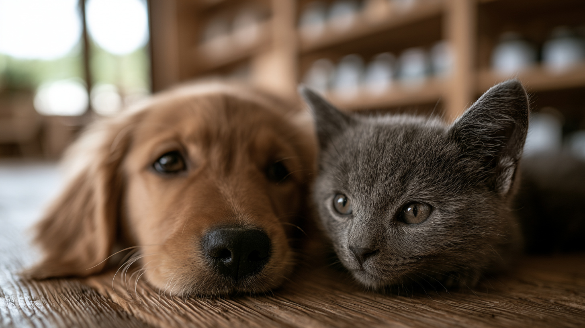

Animalerie en Guadeloupe : tout pour vos animaux
Alimentation premium, accessoires, soins et conseil personnalisé : l'animalerie Guadeloupe de Jardiland prend soin de vos compagnons avec vous. Dans nos magasins de Baie-Mahault et des Abymes, nos conseillers connaissent les besoins des animaux sous climat tropical.
Que votre compagnon ait quatre pattes, deux oreilles ou des nageoires, vous trouvez tout sous le même toit : nourriture, habitat, hygiène et jouets. Mais surtout, vous repartez avec le bon conseil, celui qui tient compte de votre animal, de votre logement et de votre quotidien.
Chez Jardiland, l'animalerie n'est pas un simple rayon : c'est un accompagnement dans la durée, du premier chiot à l'aquarium installé depuis des années.

Trois univers pour tous vos compagnons
L'animalerie se découpe en trois mondes complémentaires, chacun avec ses rayons et ses spécialistes.
Chiens et chats
Croquettes premium et vétérinaires, pâtées, accessoires, couchages, hygiène et antiparasitaires : tout pour bien nourrir et équiper vos chiens et chats. Nos conseillers vous orientent vers l'alimentation adaptée à l'âge, la taille et la sensibilité de votre animal.
Rongeurs et petits animaux
Lapins, cobayes, hamsters, rats et gerbilles trouvent ici habitats, foin de qualité, alimentation et jeux. Nous vous aidons à choisir l'espèce qui correspond à votre famille et à préparer un habitat confortable avant l'adoption.
Aquariophilie
Aquariums équipés, poissons d'eau douce tropicale, plantes, décors et matériel de filtration : un univers complet pour débuter ou faire évoluer votre bac, avec les conseils de nos passionnés.
L'approche Jardiland : du conseil, pas seulement un produit
Ce qui distingue notre animalerie, c'est la qualité de l'accompagnement. Voici ce sur quoi nous ne transigeons pas.
Des conseillers qui prennent le temps
Pelage qui change, démangeaisons, troubles digestifs : nos conseillers prennent le temps de comprendre avant de recommander. Vous n'achetez pas qu'un sac de croquettes, vous bénéficiez d'un interlocuteur qui suit votre animal au fil des visites.
Des marques sélectionnées
Royal Canin, Zolux et d'autres marques sérieuses : nous travaillons avec des références que nous connaissons et recommandons en connaissance de cause. Vous trouvez aussi tous les accessoires animaux Guadeloupe utiles au quotidien tropical.
Vos questions, nos réponses
Vendez-vous des animaux vivants en magasin ?
Notre cœur de métier reste l'alimentation, les accessoires et le conseil. Pour tout projet d'adoption, passez nous voir : nous vous expliquons ce qu'il faut prévoir en espace, en budget et en engagement avant d'accueillir un nouveau compagnon.
Comment conserver les croquettes sous climat tropical ?
La chaleur et l'humidité altèrent vite un sac ouvert. Transvasez les croquettes dans un contenant hermétique et opaque, à l'abri de la chaleur. C'est le geste simple qui préserve qualité et appétence.
Proposez-vous un suivi pour mon animal ?
Oui : nos conseillers connaissent votre animal au fil des visites et ajustent leurs recommandations. N'hésitez pas à venir avec votre compagnon, à Baie-Mahault comme aux Abymes.
Venez nous rendre visite en magasin
Baie-Mahault ou Les Abymes : nos 25 conseillers vous attendent six jours sur sept.
Voir nos magasins